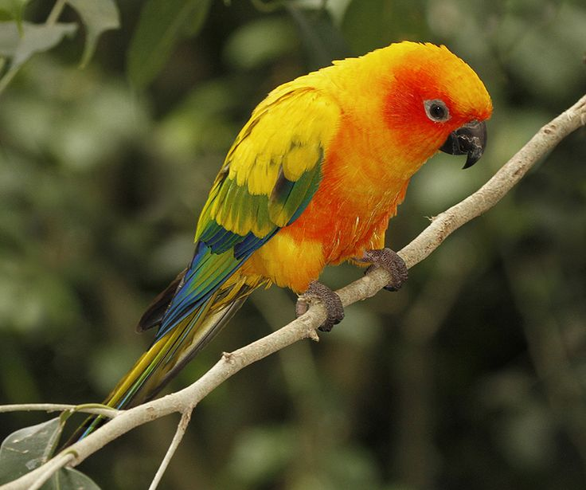

Life of a Parrot
Parrots are vibrant, intelligent birds predominantly found in tropical and subtropical regions. They belong to the order Psittaciformes and encompassing around 393 species, including macaws, cockatoos, and parakeets. Known for their striking plumage, parrots display a wide range of colors which serve purposes from attracting mates camouflage.Parrots are highly social creatures, living in flocks that provide protection and facilitate complex social interactions. They form strong pair bonds, often mating for life. Communication within flocks is sophisticated, involving a variety of calls and songs, with many species capable of mimicking human speech and other sounds.